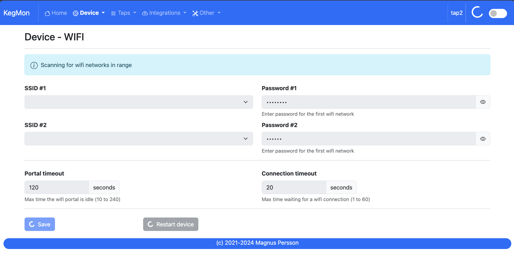

Software Installation¶
Checklist for configuring the device¶
Install the firmware using one of the following options:
Brewflasher via USB serial
Brewflasher WEB via USB serial
Brewflasher¶
The preferred option for flashing KegMon is using BrewFlasher, its a tools that support many brewing related firmwares for ESP8266 and ESP32. This works on both Windows and Mac. You can download the latest version from here: Brewflasher there is also a web based version available here Brewflasher WEB.

Binaries¶
In the /bin directory you will find 2 different firmware builds;
firmware.bin
This is the standard release build for esp8266
firmware32s2.bin
This is the release build for an esp32s2 variant.
firmware32s3.bin
This is the release build for an esp32s3 variant.
Updating firmware¶
You can use the above options for updating the firmware as well. But if you want to do updates without connecting the USB cable these are your options.
Manual update¶
When the device in is configuration mode you can manually update with a new firmware. Just navigate to configuration -> fimware select the firmware.bin or firmware32s2.bin file that corresponds to the version you want to flash.
Serial Monitoring¶
To check output from the device (logs) there are several tools out there. I found this simple tool in the Windows Store called Serial Port Monitoring.
Just select a baud rate of 115200, 8N1.
Configuring WIFI¶
When the device is flashed it will need to have WIFI configuration in order to work. If you have used other software on the device its possible that wifi settings already exist.
If you have difficulties to connect to the create Access Point then try to do a reset and try again. Every time the AP is create it chooses a random channel.
If this is not configured in the device it will create an wireless access point called KegMon. The default password is password.
Connect to this AP and enter the SSID and password you want to use. If the web page don’t open automatically you can enter the following address in the browser: http://192.168.4.1
Before pressing save on the network information, make a note of the devicename that is shown on the screen, this will be the name that is used in the next step to access the configuration pages. The link would look like this: http://kegmon56EA34.local
Under wifi settings you can define a primary and secondary wifi SSID. The secondary will be used in case the primary fails. If the secondary is successful then it will be used as primary. The second wifi setting is optional and not needed.
{kind=link}
Finding the device adress¶
Once the wifi network settings have been added then the device will reboot and connect to your network. If the blue led is flashing then it’s up and running and is ready to be configured.
If your computer supports mDNS the address you saw before can be used in your web browser to connect to the device. Windows does not have the best support for mDNS so if you are having issues with finding the network name you can try the following:
Check your wireless router for the IP address and use that to connect instead, for example; http://192.168.1.56
Download an IP scanner / Port Scanner on your Windows computer or mobile device and use that to find what devices are listening on port 80.
Once you can access the user interface then proceed to the next step.